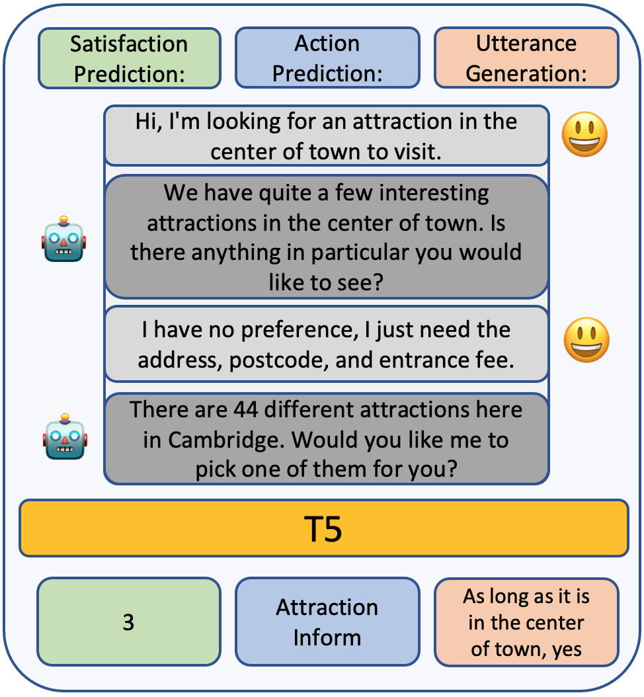
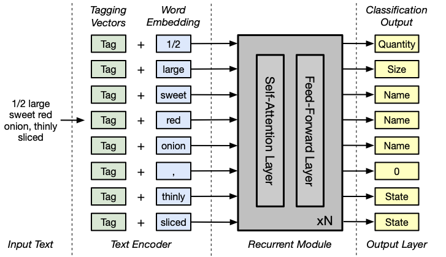
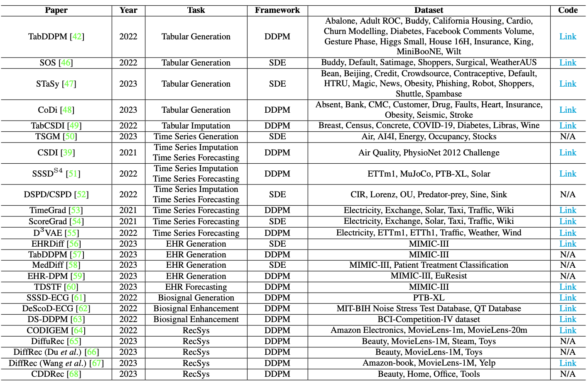
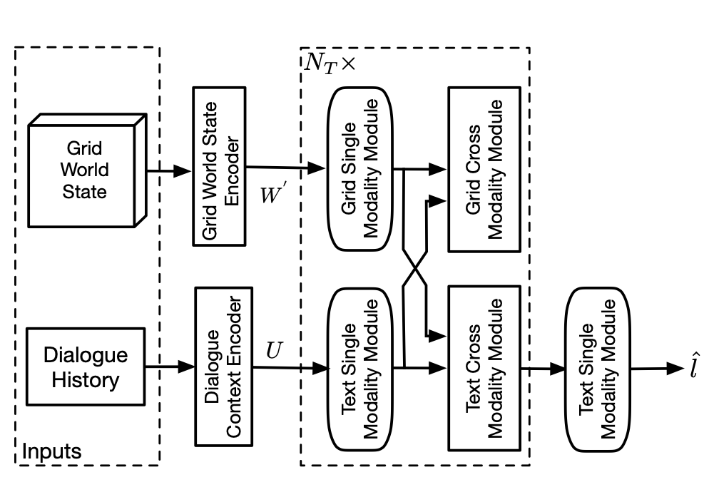

|
Danny To Eun Kim
김도은
(View from wider screen to see with pictures!)
News: I am excited to join The Language Technologies Institute
at CMU School of Computer Science as a PhD Student this Fall 2023!
I am a graduate researcher at UCL Web Intelligence Group, University College London (UCL),
where I received an integrated Master's degree (M.Eng.) in Computer Science in 2022.
Currently, I'm working with Prof. Emine Yilmaz and Dr. Aldo Lipani
in the area of Conversational AI, Search, Question-Answering, and User Simulation.
Also, I'm an active member of both Knowledge Graphs
and NLP interest group at The Alan Turing Institute, where I regularly present and share my research.
During the summer of 2022, I interned at Vector.ai as a Machine Learning Engineer,
automating the paperwork in freight forwarding industry by OCR and NLP.
From May 2021, I joined team Condita as a main developer to compete in the first Amazon Alexa Prize TaskBot Challenge,
where I spent significant amount of time, constructing a real-time, multi-modal, knowledge-intensive, and interactive conversational assistant;
our team has made to the quarterfinals.
Prior to that, I worked with Prof. Marianna Obrist at UCL (Human-Computer) Interaction Centre,
finding ways to cluster text-based stories by authors' smell experience.
I love to spend my time teaching and socializing with like-minded researchers in various societies.
For example, I served UCL Artifical Intelligence Society as a primary committee for 3 years.
For more, you can take a look at my blog page or pictures!
Email /
CV /
Google Scholar /
Blog /
Twitter /
GitHub
|
|
|
Research
The ultimate goal of my research aims for a real-time conversational assistants.
Therefore, I try to find better ways to encode human knowledge into computable forms, i.e., language models or graphs,
and make the knowledge retrievable by (conversational) search systems.
Current Research:
- Retrieval-Enhanced Machine Learning
- Response Ranking/Selection with Conversational Look-Ahead that optimizes user satisfaction
- Evaluation of Conversational System by User Simulation
- Interactive Grounded Language Understanding - Asking Clarification Questions
Theses
|
|

|
A Multi-Task Based Neural Model to Simulate Users in Goal-Oriented Dialogue Systems
To Eun Kim,
Aldo Lipani
SIGIR, 2022
paper /
poster /
code /
bibtex
Conversational User Simulator that 1) generates user-side utterance, 2) predicts user's next action and 3) satisfaction level by multi-task learning.
SOTA in Satisfaction and Action prediction in USS dataset
|
|
|
Condita: A State Machine Like Architecture for Multi-Modal Task Bots
Jerome Ramos*, To Eun Kim*, Z. Shi, X. Fu, F. Ye, Y. Feng,
Aldo Lipani
* denotes equal contribution.
Alexa Prize TaskBot Challenge Proceedings, 2022
paper /
bibtex
We present COoking-aNd-DIy-TAsk-based (Condita) task-oriented dialogue system, for the 2021 Alexa Prize TaskBot Challenge.
Condita provides an engaging multi-modal agent that assists users in cooking and home improvement tasks, creating a memorable and enjoyable experience to users.
We discuss Condita's state machine like architecture and analyze the various conversational strategies implemented that allowed us to achieve excellent performance throughout the competition.
|
|

|
Attention-based Ingredient Phrase Parser
Z. Shi, P. Ni, M. Wang, To Eun Kim,
Aldo Lipani
ESANN, 2022
paper /
arXiv /
code /
bibtex
Spin-off research from the Alexa Prize TaskBot Challenge.
Assisting users to cook is one of these tasks that are expected to be solved by intelligent assistants,
where ingredients and its corresponding attributes, such as name, unit, and quantity, should be provided to users precisely and promptly.
To provide an engaged and successful conversational service to users for cooking tasks, we propose a new ingredient parsing model.
|
|

|
A Comprehensive Survey on Generative Diffusion Models for Structured Data
Heejoon Koo, To Eun Kim
arXiv /
bibtex
/
pdf
There is still a lack of literature and its reviews on structured data modelling via diffusion models, compared to other data modalities such as visual and textual data.
To address this gap, we present a comprehensive review of recently proposed diffusion models in the field of structured data.
First, this survey provides a concise overview of the score-based diffusion model theory,
subsequently proceeding to the technical descriptions of the majority of pioneering works that used structured data in both data-driven general tasks and domain-specific applications.
Thereafter, we analyse and discuss the limitations and challenges shown in existing works and suggest potential research directions.
|
|

|
When and What to Ask Through World States and Text Instructions: IGLU NLP Challenge Solution
Z. Shi*, J. Ramos*, To Eun Kim, X. Wang, H. Rahmani,
Aldo Lipani
* denotes equal contribution.
arXiv /
bibtex
In the NeurIPS 2022 IGLU Challenge NLP Task, we address two key research questions: 1) when should the agent ask for clarification, and
2) what clarification questions should it ask.
In this report, we briefly introduce our methods for the classification and ranking task.
For the classification task, our model achieves an F1 score of 0.757, which placed the 3rd on the leaderboard.
For the ranking task, our model achieves about 0.38 for Mean Reciprocal Rank by extending the traditional ranking model.
Lastly, we discuss various neural approaches for the ranking task and future direction.
|
|
Presentations & Workshops
|
|
|
Course Co-organiser
- Intensive Python Programming Course (for MSc students' dissertation)
Teaching Assistants (MSc courses)
- CEGE0096: Geospatial Programming (Fall 2022)
- CEGE0004: Machine Learning for Data Science (Spring 2023)
- COMP0071 Software Engineering (Spring 2023)
- COMP0189: Applied Artificial Intelligence (Spring 2023)
Transition Mentor
- Helping 1st year CS students with programming (C, Java, Python, Haskell)
|
|
|
UCL Artificial Intelligence Society
A Founder, Maintainer, and Lecturer of Machine Learning Tutorial Series
|
|
You can know me better from my CV
|
|
|
Jump to the top of this page.
Source code of this website is modified from here.
|
|